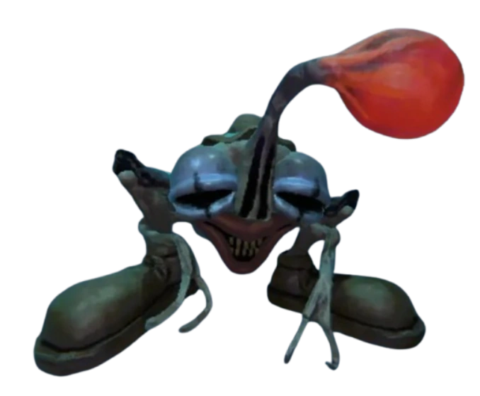

Payaso
El Payaso es un enemigo de nivel 3 que hace fuertes pisotones mientras vaga. Al detectar a un jugador, le dispara un rayo láser en un ángulo de 90° y 180° y luego camina rápidamente hacia él para intentar patearlo. El Payaso apunta el láser a la cabeza del jugador y lo fija inmediatamente después, lo que significa que, una vez iniciado su ataque, no podrá girarlo en el eje Y. El rayo puede causar mucho daño a tus objetos de valor y a otros monstruos.
Al igual que la Túnica , el Payaso pateará los objetos que bloqueen su camino. Esto puede provocar que los objetos del carro y los objetos más grandes en el suelo sufran daños y pierdan valor. Para evitarlo, es mejor evitar que el carro y los objetos más grandes bloqueen pasillos y otros pasajes estrechos.
El Payaso tiene cierta percepción de proximidad. Si un jugador se mueve estando muy cerca, girará rápidamente para patearlo. Esto puede ocurrir incluso si el jugador está fuera de su campo de visión (por ejemplo, justo detrás de él). También puede detectar a jugadores agachados o escondidos que se mueven, ¡así que ten cuidado!
Características
-
Nivel
3
-
Salud
250
-
Daño
-
Haz
Golpe inicial: 30
Daño físico: 70
-
Patada
Golpe inicial: 10
Daño físico: 50
-
-
Detección
Línea de visión, sonido, conocimiento de proximidad
-
Punto de quiebre de fuerza
13
-
Punto de quiebre de fuerza (aturdido)
1
-
Hablilidad
Disparará un rayo láser que barre horizontalmente hacia los jugadores y los pateará a corta distancia.
-
Ataca a jugadores agachados
Sí
-
Valor del orbe
$5k - $8k
Consejos
Normalmente es mejor esperar un momento de pie mientras prepara su ataque láser para agacharse debajo. De lo contrario, los jugadores pueden saltar por encima del láser si ataca mientras están agachados.
También es posible saltar sobre su ataque de patada si se hace en el momento adecuado.
Aunque no se aturde con objetos valiosos de cualquier tamaño, se puede matar con bastante facilidad si se evitan sus ataques y se le golpea con objetos valiosos en el tiempo adecuado. Sin embargo, para una muerte más segura, se recomienda usar algo que pueda aturdirlo.